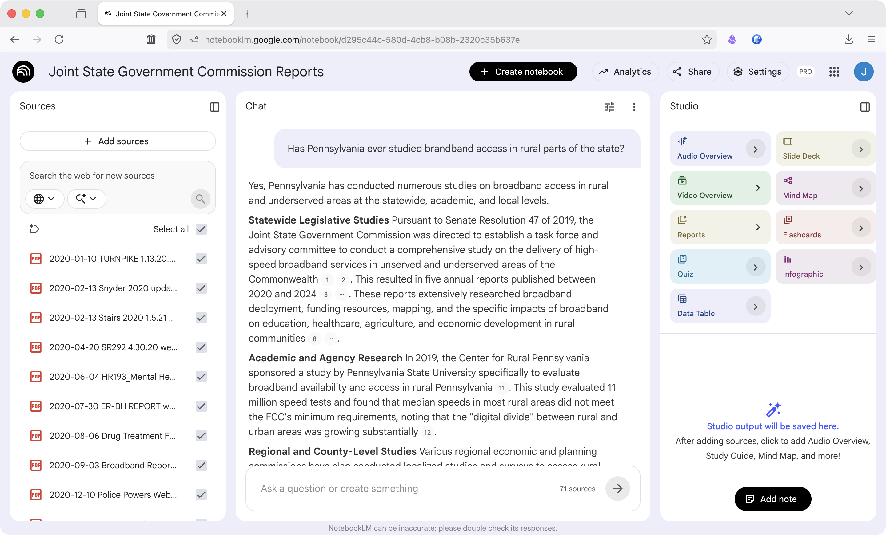
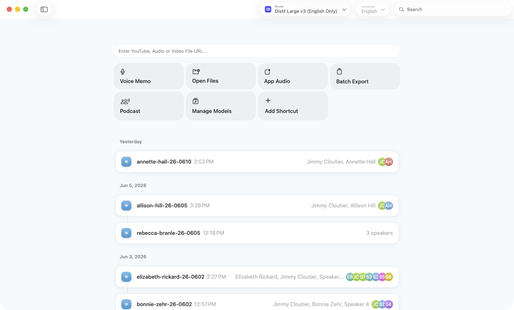
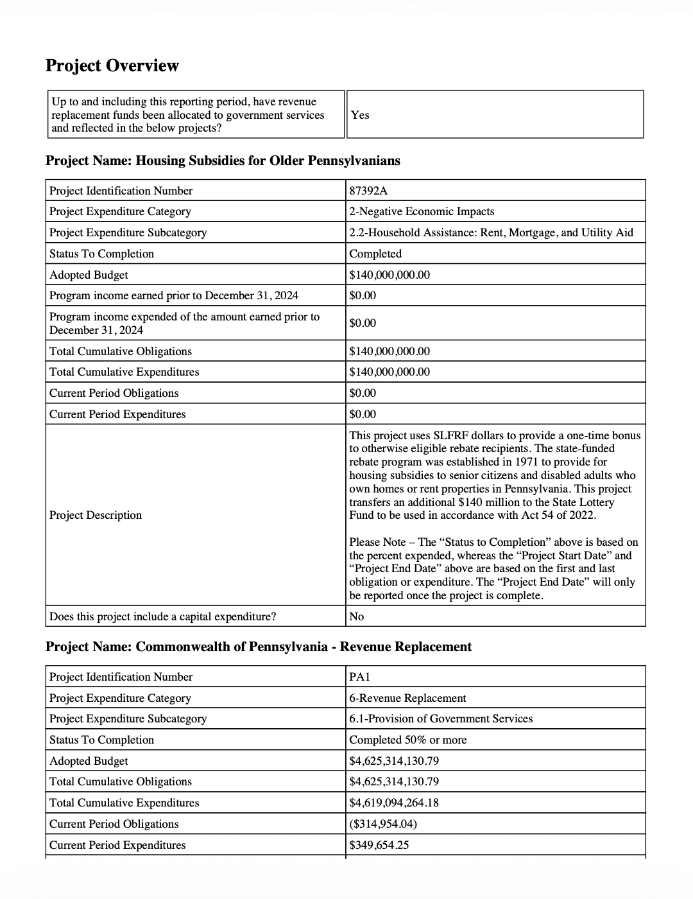
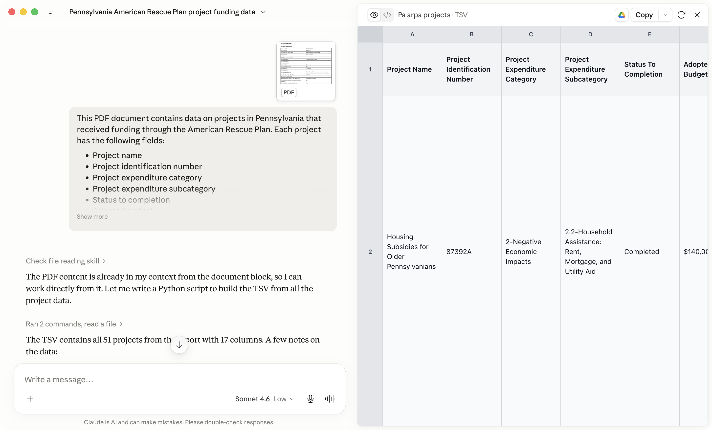
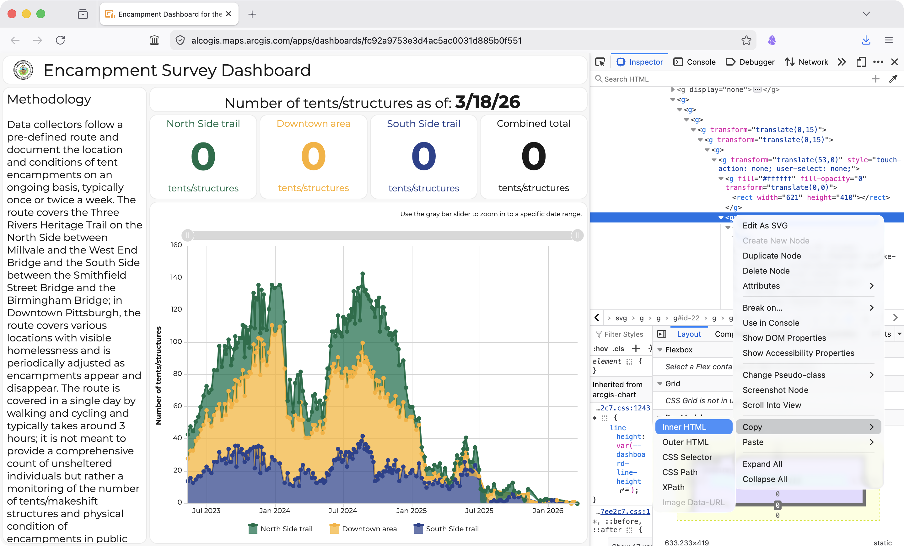
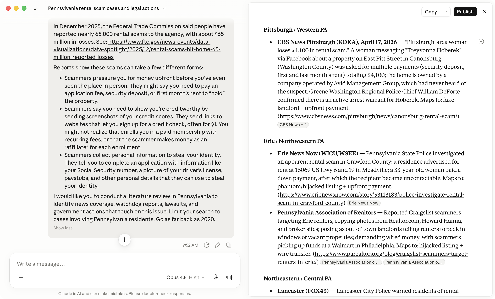
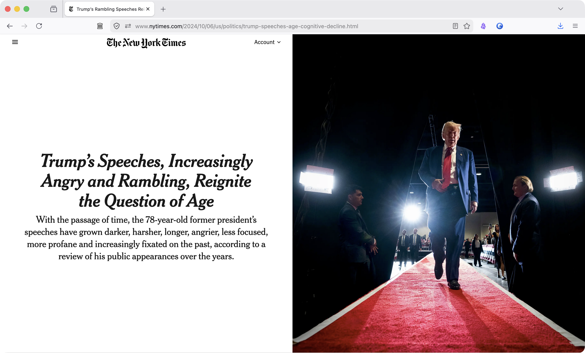

Let’s talk about AI
Pitfalls
1. Accuracy
AI models are known to hallucinate. They make things up. When a model doesn’t know something, it doesn’t say so. It guesses, fluently and confidently. Treat every AI-generated fact, name, statistic and quote as a tip that requires independent verification.
What AI will fabricate:
- Quotes from real people that were never said
- Statistics with plausible-sounding but nonexistent sources
- Court cases, legislation, or government documents that don’t exist
- Summaries of real documents that get key details wrong
Why this matters for local journalism?
Why local coverage is high-risk:
- AI training data skews toward national, internet-prominent sources (Reddit, Twitter/X).
- Local government, regional courts, and community history are underrepresented
- Hallucination risk increases on niche, hyperlocal, and recent topics — exactly what we cover
What that looks like in practice:
- AI confidently summarizes a FOIA response it has never read
- A fabricated quote from a county commissioner sounds exactly like a real one
- AI “knows” how Congress works — but might not know how Pittsburgh’s zoning board does
Verify Everything
- Never publish an AI-generated fact without tracing it to a primary source
- If you can’t independently verify it, it doesn’t go in the story
- Ask AI to provide links to primary source documents — it gives you something concrete to check
Control the Context
The biggest lever against hallucinations: control the context. Direct AI to primary sources — documents, news articles, a specific website — and ask it to work off that.
- Paste or upload the sources.
- Ask the model to summarize or extract only from what you’ve provided
- If it references something outside your documents, that’s a red flag
NotebookLM
NotebookLM lets you upload your own source documents — PDFs, articles, transcripts, RTK responses — and then ask questions only against that material. The AI is grounded in what you gave it, not the open internet.

Give a Good Prompt
If you’re casting a wide net, be specific in your queries. A vague prompt invites a vague answer. Specificity constrains the model and makes outputs easier to verify.
A strong prompt includes:
- A specific location and subject
- A clear timeframe
- Named sources to draw from
- A requested output format
- An instruction to cite primary sources
Example:
“Summarize what is publicly known about water quality violations in Bucks County, Pennsylvania since 2020. Focus on any EPA enforcement actions or state DEP reports. List the key facts with dates, and provide links to primary source documents I can verify.”
2. Data Privacy
When you type into ChatGPT, Claude, Grok, or any commercial AI chatbot, that input doesn’t disappear. It travels to a server, gets logged and in many cases is used to improve the model.
- Most free-tier tools retain your conversations by default
- Enterprise or paid tiers often have stronger protections — but require you to check the terms
- You generally cannot control what happens to data once it leaves your device
- Assume anything you type into a chatbot could be read by a human reviewer, stored indefinitely or surface in a future model
What’s at risk?
- The names and/or identifying information of a source.
- Unpublished documents
- The existence of an ongoing investigation
- Communications with a confidential sources
- Internal newsroom strategy or story planning
How to protect privacy?
Ask yourself this: Is this information that, if it were to become public, would land you in trouble?
Information that’s already public is fair game. Anything else requires discretion.
3. Transparency & Ethics
This topic deserves its own session — but here’s the baseline question:
Would your readers be comfortable knowing how you used AI on this story?
Lean on the side of disclosure. Readers are increasingly aware of AI — and skeptical. Unexplained AI use erodes trust.
Five Basic Principals
01 — Accuracy First AI hallucinates. Every AI-generated fact must be verified by a journalist before publication. Treat AI output as a tip, not copy. No exceptions.
02 — Transparency Disclose AI use to readers. Audiences have a right to know when and how AI contributed to a story.
03 — Human Accountability The byline is yours. Only put your name on something you can stand behind — in front of your editor, your readers or in a court of law.
04 — Bias Awareness AI models carry biases from their training data. Interrogate AI outputs for systemic bias, especially on race, gender, and politics (looking at you Grok).
05 — Source and Data Protection Never input confidential source information into AI tools. Most commercial AI services retain input data. We have a duty to protect our sources.
Reference: SPJ Code of Ethics • Reuters AI Journalism Principles • The Guardian AI Editorial Standards
Use Cases
1. Transcription
AI transcription tools handle interviews, press conferences, and video recordings accurately and in minutes.
Tools like MacWhisper run on your local device, meaning they can be used to transcribe sensitive interviews.

2. Extracting Data from PDFs
AI understand document structure and context — not just characters on a page — making them far more effective than traditional OCR on messy government records.

2. Extracting Data from PDFs

3. Extracting Data from Web Pages
With a little knowledge about HTML, you can use AI to extract data from webpages — no scraper needed.

3. Extracting Data from Web Pages

4. Finding Previous Records Requests
AI can help surface records requests. Know what’s already been requested and use successful requests to help craft your own.

5. Literature Reviews
AI can quickly synthesize existing coverage on a topic — surfacing prior investigations and flagging angles that haven’t been pursued.

6. Scaling Investigations (NYT’s Cheatsheet)
The Times built an AI tool to research 10,000 people registered for a Puerto Rico tax break — automatically searching names, flagging people of interest, and surfacing the investigation that followed. The tool later grew into “Cheatsheet,” used to analyze thousands of media appearances and track extremist content at scale.

Others…?
- Compare document versions: Spot what changed between two contracts, budgets, policies, or permit applications
- Surface numbers from government reports: Pull figures and statistics from long PDFs that were never meant to be machine-readable
- Build timelines: Generate a timeline from your notes or a stack of records.
- Prepare for interviews: Generate questions for an interview. Practice potential follows based on responses. With enough context, AI can pretend to be your subject in a mock interview.
- Translation: AI handles context and nuance better than Google Translate on foreign-language documents and sources.
- Generate mock ups for visualizations: Describe the data you want to plot and generate ideas for graphics.
The Risk Framework
Low Risk: Assistive taks
- Transcription cleanup after recording interviews
- Translation drafts for non-English sources
- Brainstorming interview questions
- Summarizing long documents for your own use
- Tagging, SEO variants, newsletter subject lines
Medium Risk: Production tasks
- Summarizing documents for publication
- Extracting claims or entities from records
- Generating draft headlines
- Using AI to analyze datasets or FOIA/RTK responses
- Creating audio versions of text stories
High Risk: Core journalism tasks
- Writing publishable copy from scratch
- “Explaining” facts without cited sources
- Generating images, audio, or video
- Voice or identity replication
- Any output published without full human review
Questions?
Further Reading & Resources
- machlis.com/nicar — Sharon Machlis’s NICAR AI resources for journalists
- indicator.media — Newsletter covering AI and tech tools that assist journalism
- buriedsignals.com — AI in journalism, tools and practice
- niemanlab.org — Harvard’s Nieman Lab; strong ongoing coverage of AI in newsrooms
- themarkup.org — Data-driven tech accountability journalism; good model for AI-assisted reporting
- towcenter.org — Columbia’s Tow Center; publishes research on AI and newsroom practice
Produced by humans with assistance from Claude.